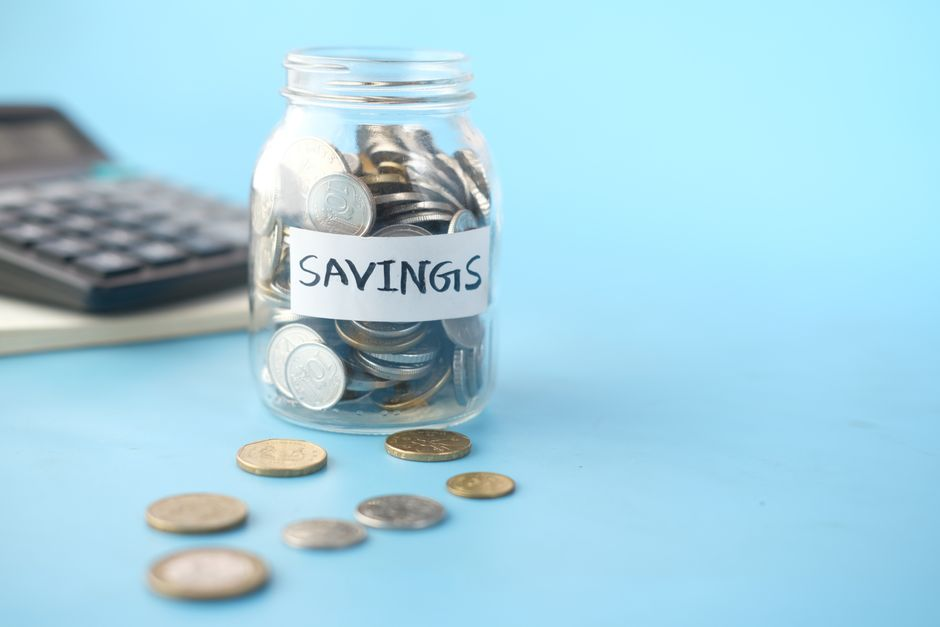

10월 16일이 마감이면 지금 뭘 알아야 하나 — 청년미래적금 2차, 월 50만원에 정부 12% 매칭

발행일 2026-10-09
결론부터 하겠습니다. 2차 가입신청은 10월 7일부터 16일까지(토·일·공휴일 제외), 신청 자체는 취급기관 앱으로 서류 없이 끝납니다. 이 상품에서 진짜 돈이 되는 숫자는 세 개입니다. 월 50만원 한도, 여기에 정부가 얹는 기여금 6% 또는 12%, 그리고 이자소득세 면제. 우대형(12%)은 중소기업 재직자·신규 취업자·연매출 1억원 이하 소상공인이 받을 수 있고, 금리·기여금·비과세를 다 합치면 연 18.2~19.4%짜리 단리 적금에 들어가는 것과 비슷한 효과로 안내되고 있습니다. 신청 전에 유형만 잘못 고르면 2%p를 그냥 버리는 셈이라, 이 글은 "유형 고르기"에 거의 모든 무게를 뒀습니다.
30초 요약
| 항목 | 내용 |
|---|---|
| 대상 | 만 19~34세(병역 이행 최대 6년 차감) — 2차 회차 기준 1991년 11월 17일생~2007년 11월 27일생 ① 총급여 7,500만원(종합소득 6,300만원) 이하 소득자 또는 연매출 3억원 이하 소상공인 ② 가구 중위소득 200% 이하(맞벌이 2인 가구는 250% 이하) — ①②를 동시에 충족 |
| 내는 돈 | 매월 최대 50만원, 자유적립식(한 달 안 넣어도 계좌는 유지) |
| 정부 매칭 | 일반형 6% · 우대형 12% — 월 최대 6만원(일반) / 3만원(우대)까지 매칭 |
| 만기 | 3년(36개월). 이자소득세 면제 |
| 일정 | 신청 10.7~10.16(7일 홀수·8일 짝수, 12~16일 출생연도 무관) → 심사 10.19~11.13 → 결과 안내 11.12~13 → 계좌개설 11.16~27 |
| 신청 | 취급기관 14곳 앱 비대면(농협·신한·우리·하나·기업·국민·수협·iM·부산·광주·전북·경남·카카오·우정사업본부), 운영시간 9:00~18:30. 토스뱅크는 3차부터 |
1. 누가 가입할 수 있나 — 나이 두 줄, 소득 두 줄
나이 요건은 신청일이 아니라 계좌개설 기간(11월 16~27일) 기준으로 판정됩니다. 그래서 2차 회차는 1991년 11월 17일생부터 2007년 11월 27일생까지가 대상이라고 못 박혀 있습니다. 군 복무는 최대 6년까지 나이에서 빼줍니다. 지금 35세인데 군대를 2년 갔다 왔다면 33세로 보고 심사하는 식입니다.
소득은 두 개의 관문을 동시에 통과해야 합니다. 첫째는 본인 소득 — 직전 연도(2025년) 국세청 확정 소득으로 총급여 7,500만원 이하, 사업자는 종합소득 6,300만원 이하입니다. 둘째는 가구 소득 — 본인이 속한 가구의 기준 중위소득 200% 이하이고, 본인과 배우자 둘 다 소득이 확인되는 맞벌이 2인 가구는 250%로 완화됩니다. 비과세 소득만 있는 경우는 원칙적으로 제외되되 육아휴직급여(수당)와 군 장병급여는 예외로 소득에 포함해서 봐줍니다.
직전 3개년 중 1회라도 금융소득종합과세 대상이었던 해가 있다면 가입이 제한됩니다. 이자·배당 합계가 2,000만원을 넘긴 해가 있었는지는 미리 확인해두세요.
2. 유형 선택이 곧 수익이다 — 6%와 12% 갈림길
2차 모집부터는 신청 단계에서 본인이 유형을 직접 고릅니다. 일반소득자·중소기업 재직자·소상공인 중 하나인데, 심사 결과가 내 선택과 다르면 정정이 됩니다. 기여금 구조는 아래와 같습니다.
| 구분 | 본인 소득·매출 | 가구 중위소득 | 기여금 |
|---|---|---|---|
| 우대형 | 총급여 3,600만원(종합소득 2,600만원) 이하 중소기업 재직·신규 취업자 / 연매출 1억원 이하 소상공인 | 150% 이하 (맞벌이 2인 200%) | 12% |
| 일반형 | 총급여 6,000만원(종합소득 4,800만원) 이하 일반소득자 / 연매출 3억원 이하 소상공인 | 200% 이하 (맞벌이 2인 250%) | 6% |
| 기여금 미대상 | 총급여 6,000만원 초과~7,500만원 이하 (종합소득 4,800만원 초과~6,300만원 이하) | 200% 이하 (맞벌이 2인 250%) | 0% (비과세만) |
월 최대 납입 50만원을 계속 채운다고 놓고 보면 기여금은 우대형 월 6만원(3년 216만원), 일반형 월 3만원(3년 108만원)입니다. 여기에 은행 금리가 3년 고정(기본 5% + 우대 2~3%)으로 붙고 이자에는 세금이 없습니다. 금융당시가 안내하는 만기 수령 시나리오를 옮겨 적으면 금리 7% 가정에서 일반형 2,110만원(원금 1,800 + 기여금 108 + 이자 202), 우대형 2,227만원(원금 1,800 + 기여금 216 + 이자 211)입니다.
3. 이미 청년도약계좌에 들어 있다면 — 갈아타기 계산
2차부터 청년도약계좌 가입자에게 갈아타기 기회가 붙었습니다. 순서가 중요한데, 먼저 이번 2차에 청년미래적금 가입신청을 해서 가입 가능 안내를 받고, 청년미래적금 계좌를 먼저 개설한 뒤, 계좌개설 기간 중에 '청년미래적금 가입 목적의 청년도약계좌 특별중도해지'를 신청하는 순서입니다. 순서를 바꾸면 해지가 먼저 나가서 지원금 계산이 꼬입니다.
| 청년도약계좌 | 청년미래적금 | |
|---|---|---|
| 만기 | 5년(60개월) | 3년(36개월) |
| 월 납입한도 | 70만원 | 50만원 |
| 기여금 | 3~6% (월 최대 3만 3천원) | 6% 또는 12% (월 최대 6만원) |
| 신규 가입 | 2025년 말 종료 | 2026년 6월 시작, 현재 2차 진행 |
| 갈아타기 | — | 2차부터 가능 |
어디가 유리한지는 남은 만기 개월 수로 갈립니다. 이미 40개월 가까이 넣었다면 5년 만기까지 남은 기간과 기여금 누적을 먼저 계산해봐야 하고, 2~3년차쯤이라면 3년 만기로 짧게 정리하면서 12%를 받는 편이 유리한 쪽으로 기웁니다. 최소 3년 이상 유지한 뒤 해지하는 경우가 아니면 중도해지 시 기여금 전액을 못 받는 구조도 함께 두고 보세요.
한 가지 더 있습니다. 2027년 예산안이 국회에서 확정되면 우대형 기여금이 15%(비수도권 중소기업 재직자는 25%)로 오르고, 지금은 비과세만 받는 총급여 6,000만원 초과~7,500만원 이하 구간에도 일반형 기여금이 소급 지급될 수 있습니다. 기존 가입자에게도 소급 적용된다고 안내돼 있으니, 갈아타기를 미룰지 말지 판단할 때 이 변수를 같이 넣으세요.
4. 서류는 거의 없지만 하나가 걸린다
심사는 관계기관 전산 연계로 서류 없이 진행됩니다. 다만 아래는 예외입니다.
- 소상공인 확인서 — 매출액으로 가입하려는 경우 신청 전에 발급해두어야 합니다. 중소기업현황정보시스템에서 회원가입 후 신청·승인을 거쳐 발급받고, 운영 중인 모든 사업장 기준 확인서여야 합니다. 문의는 국번 없이 1357.
- 육아휴직급여·군 장병급여 증빙 — 연계 정보로 비과세 소득 확인이 안 될 때.
- 가족관계증명서 — 주민등록표등본 기준으로 가구원 확정이 어려울 때.
- 중소기업확인서 — KoDATA 등 연계 정보로 중소기업 확인이 안 될 때.
소상공인 확인서는 승인까지 며칠이 걸립니다. 신청 마지막 날에 발급을 시작하면 회차를 통째로 놓칩니다.
5. 순서대로 하면 이렇게
- 나이 확인 — 계좌개설 기간 기준 만 19~34세. 해당 없으면 군 복무 기간부터 빼보세요.
- 본인 소득 확인 — 2025년 총급여(원천징수영수증 21번 칸) 또는 종합소득금액. 사업자는 연매출 3억원 이하인지 함께.
- 가구 소득 확인 — 본인을 포함한 가구 기준 중위 200%(맞벌이 2인 250%). 부모와 한 주소지에 있으면 함께 본다.
- 유형 선택 — 총급여 3,600만원 이하 중소기업 재직·신규 취업 또는 연매출 1억원 이하 소상공인이면 우대형, 아니면 일반형. 헷갈리면 낮은 쪽(일반형)으로 신청해도 사전심사에서 조정될 여지가 있습니다.
- 소상공인은 확인서 먼저 — 발급을 마친 뒤 신청.
- 10월 12~16일 앱 신청 — 7~8일 홀·짝제를 지나면 출생연도 무관. 선착순이 아니니 순서는 중요하지 않습니다.
- 사전심사 결과 확인(10.30~11.2 예정) — 내 선택과 다르면 이의신청(11.2~5 예정)으로 정정.
- 11월 16~27일 계좌 개설 — 기간 내 개설해야 납입이 시작됩니다.
6. 안 될 때
- 무소득자(구직자·전업주부)는 가입 불가 — 소득 또는 매출 요건 자체가 성립하지 않습니다. 이 경우 정부 매칭 통장 중에서는 청년내일저축계좌나 희망저축계좌 쪽을 봐야 합니다.
- 가구 소득에서 막히는 경우 — 본인 소득은 낮은데 부모와 주소지를 같이해 합산되는 케이스가 대표적입니다. 주민등록표상 세대 분리를 진지하게 고려해볼 시점입니다.
- 총급여 7,500만원 초과 또는 연매출 3억원 초과 — 가입 대상이 아닙니다.
- 금융소득종합과세 이력 — 직전 3개년 중 1회라도 해당하면 제한됩니다.
- 이번 회차를 놓쳤을 때 — 청년미래적금은 연내 추가 회차가 예고돼 있습니다(3차부터 토스뱅크 참여). 다음 신청 기간을 노리세요. 단 만 35세 도달 시점은 계좌개설일 기준이라 생일이 임박했다면 다음 회차에서 나이 요건에 걸릴 수 있습니다.